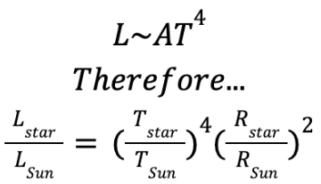
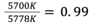
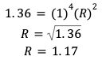

Based on all that we have established, calculating the radius of a star will not be a difficult task. We know that the Stephan-Boltzmann law states that the surface area (radius), temperature, and luminosity of a star are related in the following way:
So for the case of 51 Pegasi, our star of interest, we know that it has a luminosity relative to the Sun of 1.36 solar luminosities. We also know that it has a temperature of about 5700K, which is about 0.99 or roughly 1 solar temperature:
Solving for radius we get about 1.17, or about 1.2 solar radii:
This reflects exactly what was predicted from the Stephan Boltzmann law, that 51 Pegasi would be larger than the Sun, even though it is the same temperature (perhaps even slightly cooler), since its luminosity was greater than that of the Sun. This abnormal size is one of the primary reasons scientists tend to put this star on the border between main sequence and sub giant, and why, due to its high luminosity from its size, sometimes put it in luminosity class IV, or as a Subgiant. The elements in its spectrum also suggest that it is running out of Hydrogen, and that it might be nearing the end of the prime phase of its life. Whatever the case, it can be for sure stated that 51 Pegasi is older than the Sun based on this, and that it has less time left than the Sun before it sheds its shell and remains as a white dwarf.
Now it is possible to calculate the radius of many different stars. Comparing this value to the luminosity in 10,000 different stars yielded very interesting results, that can further be explained by findings in the HR section (figure 6). As seen, main sequence, giant, and dwarf stars are all labeled on a logarithmic scale.